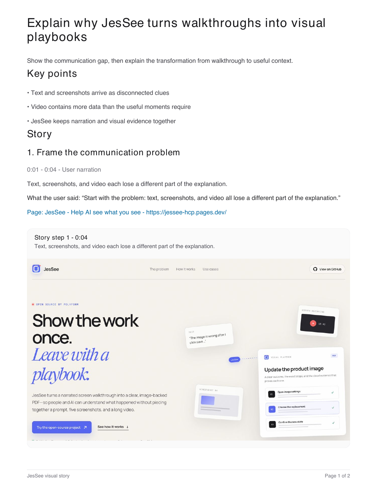

“The image is wrong after I click save...”
Open source by Polyform
Show the work once.
Leave with a playbook.
JesSee turns a narrated screen walkthrough into a clear, image-backed PDF—so people and AI can understand what happened without piecing together a prompt, five screenshots, and a long video.
Built for Chrome and Safari · Local capture storage · Bring your own OpenAI key
▶18:42
JesSee
VISUAL PLAYBOOKPDF
Update the product image
A clear outcome, the exact steps, and the visual evidence that proves each one.
01
Open image settings
✓
02
Choose the replacement
✓
03
Confirm the new state
✓
01 The communication gap
AI can read the words.
It can inspect the image.
But it misses the explanation between them.
Most product communication arrives as disconnected clues. A prompt says one thing. A screenshot shows another moment. A video contains the whole story, but asks a person to scrub through it—and gives an AI far more data than the useful moments require.
Text loses the screen
You write paragraphs describing a state the reader still cannot see.
Screenshots lose the why
You upload several images, then rebuild their order and meaning by hand.
Video keeps too much
The answer is buried inside every pause, detour, and unimportant frame.
The idea
What if you could explain something the natural way—by showing it—and get back the version that is easiest to understand?
02 From walkthrough to useful context
Talk through the work.
JesSee finds the story.
Your recording is the raw material, not the deliverable. JesSee connects what you said to what was on screen, breaks it into useful sections, and lets you choose the evidence before creating the final document.
STEP 01
Show and explain
Choose a tab, window, or screen. Talk naturally while you work. The glowing cursor makes actions clear, and simple shortcuts let you highlight or redact details.
- Narration stays aligned with the screen
- Important clicks become evidence moments
- Private Mode can keep screenshot pixels local
STEP 02
Shape the visual story
JesSee turns the walkthrough into sections with an outcome, summary, takeaways, transcript, and page context. It ranks the screenshots most likely to prove each step—you make the final choice.
- Review one piece at a time
- Swap any suggested image
- Edit every word before export
STEP 03
Hand off something useful
Generate a structured PDF that another person can scan, discuss, or give to an AI agent. The important words and visual proof travel together.
PDF Download example PDFTwo-page playbook made by JesSee from this site ↓
03 Try the developer preview
Open source · v0.1.0 alpha 3
Choose your browser.
See if JesSee helps.
These are early, unverified builds from the public GitHub repository. They are not yet listed in the Chrome Web Store or Mac App Store, so installation takes a few deliberate steps.
DEVELOPER PREVIEW
LOAD UNPACKEDChrome
Download and unzip the extension, then load its folder from Chrome's Extensions page.
- Open chrome://extensions
- Turn on Developer mode
- Choose Load unpacked and select the unzipped folder
TEMPORARY BETA
SAFARI 17+Safari
Safari can load the open-source extension ZIP temporarily while the signed and notarized release is being prepared.
- Enable Show features for web developers
- In Safari Settings → Developer, allow unsigned extensions
- Choose Add Temporary Extension and select the ZIP
Not store-reviewed or notarized yetRead the complete installation guide ↗
04 How I use JesSee
For the work that is easier to show than write.
JesSee started as a tool I wanted for my own work. These are the moments I reach for it.
Specs for AI agents
I walk through the current product, explain the behavior I want, and give the resulting visual spec to an agent. It gets the flow and the evidence—not a folder of unlabeled images.
Thoughtful offline handoffs
I can explain a complex idea at full length, then send someone a clean document they can scan on their own time instead of an 18-minute recording.
Multi-step product context
When one screenshot is not enough, JesSee keeps the sequence together: what I did, why I did it, and which screen proves the result.
Bugs and product feedback
I reproduce the issue once and leave behind a useful artifact with the path, the unexpected state, and the context needed to act.
“
I built JesSee because typing a prompt never felt like enough. When I understand a problem, I want to point at it, move through it, and explain why it matters. The output should not be more media to consume. It should be understanding someone else can use.
AE
Ahmed ElsamadisiFounder, Polyform
Why I built it
The recording is not the product.
Understanding is.
A walkthrough holds more context than a ticket, but it is a poor final format. JesSee keeps the natural act of explaining while removing the burden of watching. The result is a durable piece of context that can move between a person, a team, and an AI workflow.
Open source · MIT licensed
This is just the start.
Please make it better.
JesSee is an experiment in a better way for people to communicate with AI. Try it, use it on real work, report what breaks, or help build what should come next.
How data moves: Recordings, screenshots, and PDFs remain stored on your computer. Creating a plan sends narration and selected visual evidence to OpenAI through the API key you provide; Private Mode omits screenshot pixels. This website uses Google Analytics to measure page visits, downloads, and GitHub-link activity, but never sends recordings, screenshots, narration, API keys, email addresses, or unapproved URL parameters. Only standard campaign-attribution fields are retained, and values that resemble email addresses are discarded.
polyform-ai / jesseePublic
Help AI see what you see.
▣ safari◇ src▤ docs◆ website